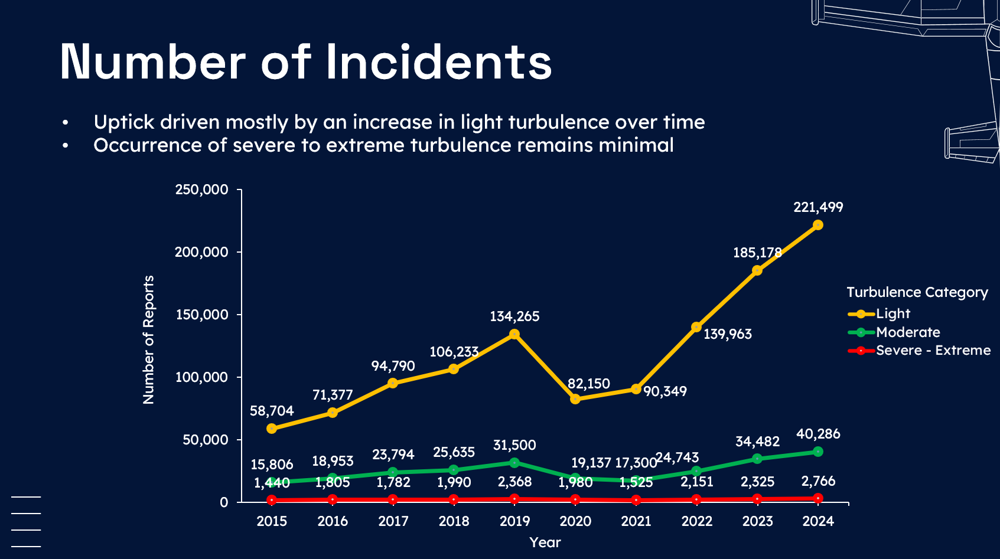
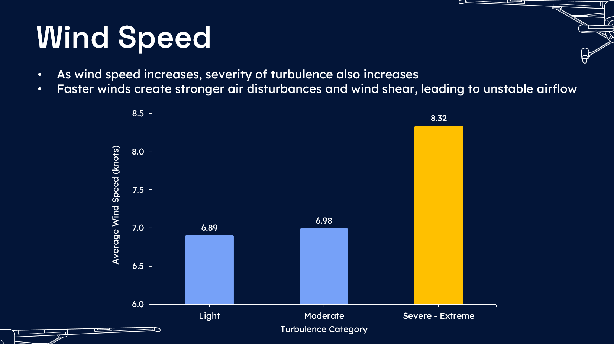
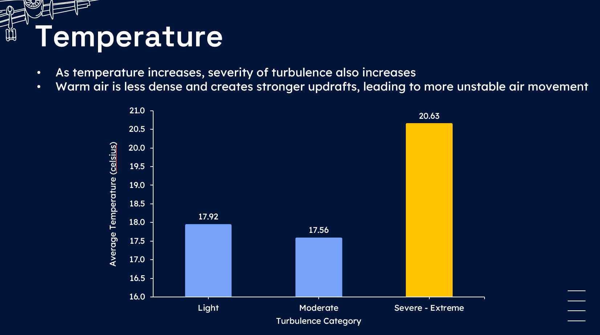
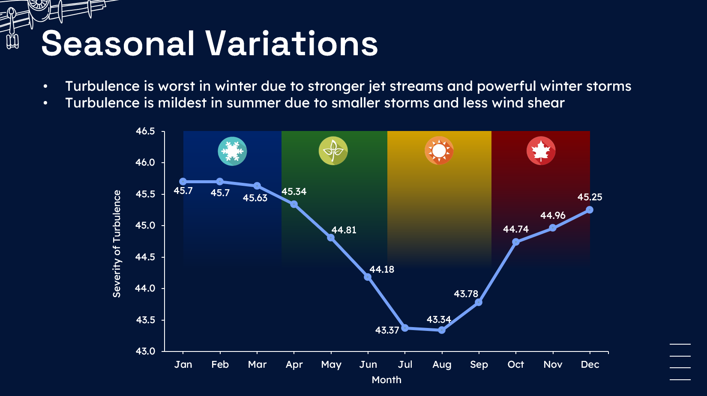
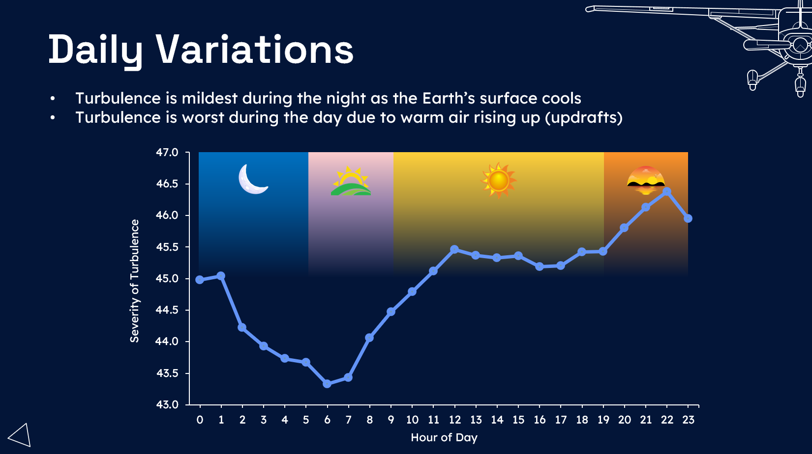
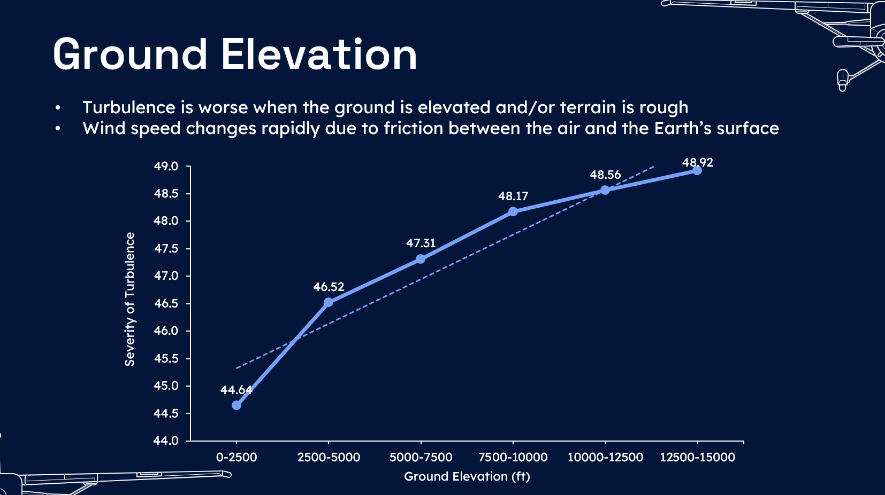
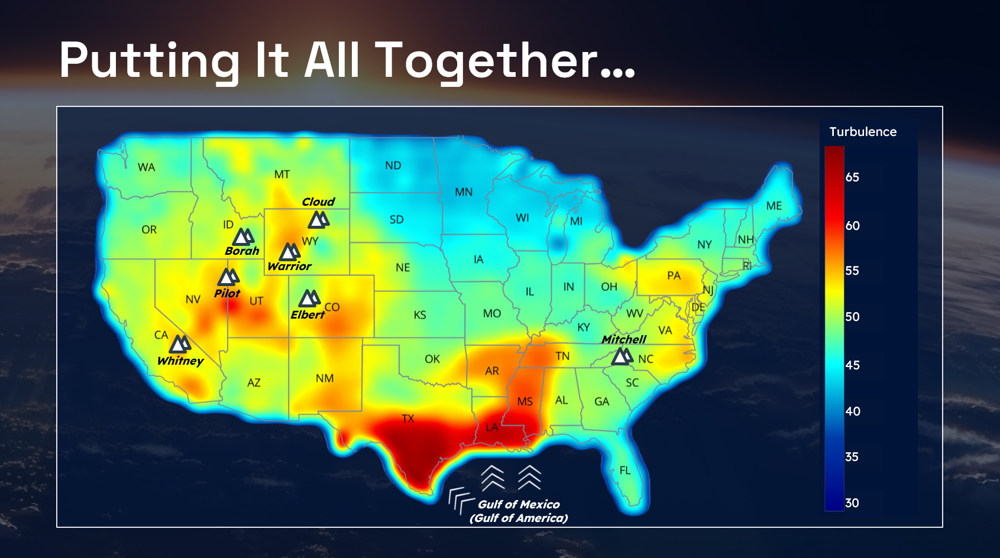
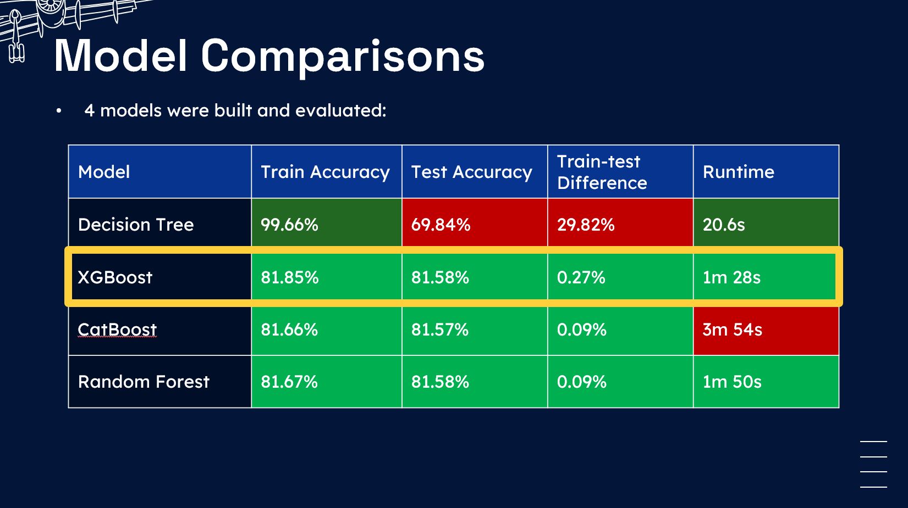

Predicting Air Turbulence with Machine Learning
This project analyses the key predictors of air turbulence and builds several machine learning models to classify the severity of turbulence based on features identified.
Description
Air turbulence is the irregular and unpredictable movement of air that can cause sudden jolts or shakes during a flight. It occurs due unstable airflow around an aircraft. While usually not dangerous, turbulence can be uncomfortable for passengers and pose challenges for pilots.
In recent years, incidents of air turbulence have been on the rise due to climate change, causing significant concern amongst airlines and passengers. Therefore, the aim of this project was to build a machine learning model to accurately predict air turbulence, specifically over U.S mainland from 2015-2024. Predicting turbulence is crucial for enhancing flight safety, reducing discomfort for passengers, and optimizing flight operations. By leveraging multiple data sources, including pilot reports, meteorological data, and aircraft specifications, this model aims to provide more accurate turbulence predictions, helping pilots and airlines make informed decisions.
Data Sources
All data were extracted from official U.S. government agencies using Application Programming Interface (API):
- Pilot reports (PIREPs): Iowa State University Environmental Mesonet
- Metereological data: Iowa State University Environmental Mesonet
- Elevation data: U.S. Geological Survey (USGS)
- Aircraft specifications: International Civil Aviation Organization (ICAO)
Data Dictionary
The following table details the data and their respective sources:
Exploratory Data Analyses
Exploratory Data Analyses (EDA) revealed that these were the key predictors of air turbulence:
- Wind speed: Turbulence is worse with higher wind speeds 
- Temperature: Turbulence is worse with higher wind temperatures 
- Season: Turbulence is worst during winter and calmest during summer 
- Time of day: Turbulence is worst during the day and calmest during the night/sunrise 
- Ground elevation: Turbulence is worse when the ground is elevated 
- Flight level: Turbulence is calmest at cruising altitude (30,000-40,000 ft)
- Weight class: Turbulence is worse for smaller aircrafts
The following density heatmap shows the severity of turbulence across U.S. mainland.
- Evidently, areas near high altitudes (around the mountains) typically experience greater turbulence. The main reason is that the air is forced up and down as it passes through mountains, and this generates a wide range of turbulent structures that can shake the plane. This turbulence can propagate far from the mountains, sometimes in the form of rolling trains of vortices known as mountain waves. At cruising altitudes the wind in the U.S. is from west to east, therefore, most of the turbulence is located at the eastern side of the mountains.
- In contrast, the Great Plains and Great Lakes states (North Dakota, South Dakota, Minnesota, Iowa, Wisconsin) present the lowest levels of turbulence in the U.S., with the flat terrain being an important factor. The plains are also sheltered from the Pacific and Atlantic winds by the Rockies and Appalachians. These two factors bring a peaceful patch of air with very low turbulence levels.
- Lastly, turbulence levels around the south (Texas, Louisiana, Mississippi) are also large due to the Gulf of Mexico's warm waters, which enhance convection, moisture, and instability in the atmosphere. Land-sea breezes, warm eddies from the Loop Current, and river plume interactions further contribute to vertical air movement and turbulent weather. Additionally, the region is frequently impacted by tropical systems that intensify atmospheric disturbances.
Results
Four classifiers were built: Random Forest, Decision Tree, XGBoost, and CatBoost
The aim of these ML models was to learn from the dataset and to predict and classify the severity of turbulence into 3 categories: Light, Moderate, or Severe.
The following table summarizes the performance of the models:
By evaluating the trade-offs between train and test accuracy, model discrepancies, and runtime, XGBoost was been identified as the best model for demonstrating superior performance with no significant overfitting.
Conclusion
This analysis is proof of concept that turbulence severity can be predicted relatively accurately using machine learning models. By utilizing a mega dataset of historical turbulence (over 1.5 million observations), the model uniquely predicts turbulence using ground-based meteorological data instead of data from plane sensors, and without traditional turbulence metrics commonly studied in the literature.
However, it is recommended that this analysis be repeated with real-time data from plane sensors to enhance its accuracy. Ground-based meteorological data may not be reflective of atmospheric conditions at various altitudes, and plane sensors also provide additional information on weather conditions in the air (e.g., wind shear, vertical wind gust, etc.). Ultimately, it is recommended that airlines integrate machine learning models into flight plans and pilot dashboards to help predict turbulence in real-time, in order to achieve smoother and safer flights for all.